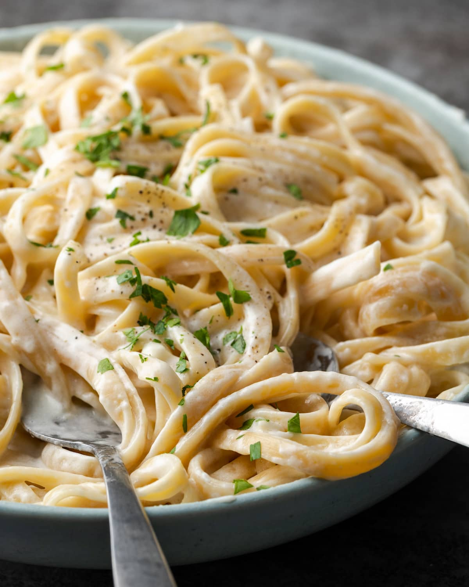

Home
Fettuccine Alfredo Recipe

Description
Fettuccine Alfredo is a classic Italian pasta dish made with fettuccine noodles, butter, and Parmesan cheese. It's creamy, rich, and incredibly satisfying.
Ingredients
- Fettuccine: Use fresh or dried fettuccine pasta.
- Butter: Unsalted butter is preferred for a rich flavor.
- Parmesan cheese: Freshly grated Parmesan cheese is best.
- Black pepper: Freshly cracked black pepper adds a nice kick.
- Salt: For seasoning the pasta water.
Preparation
- Cook the fettuccine in salted boiling water until al dente. Reserve some pasta water.
- In a large skillet, melt the butter over medium heat.
- Add the cooked fettuccine to the skillet and toss to coat in the butter.
- Stir in the grated Parmesan cheese and a splash of reserved pasta water until creamy.
- Season with salt and freshly cracked black pepper to taste.
- Serve immediately, garnished with extra Parmesan if desired.